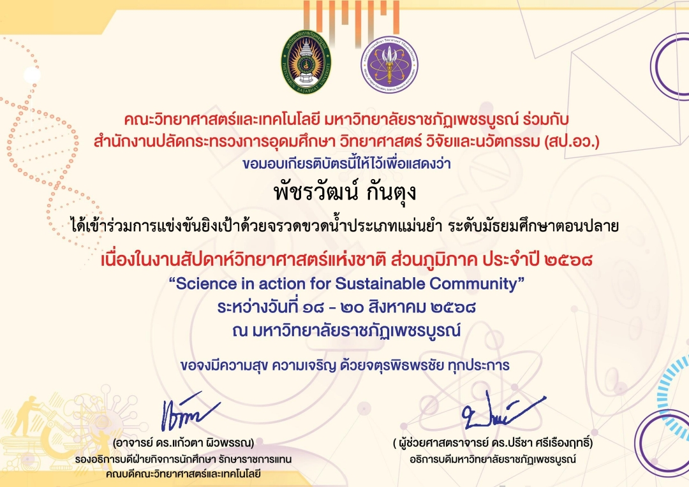

PORTFOLIO
มหาวิทยาลัยที่ต้องการเข้า
มหาวิทยาลัยนเรศวร
คณะวิทยาศาสตร์การแพทย์ สาขาจุลชีววิทยา
ข้อมูลส่วนตัว
ชื่อ-นามสกุล : นายพัชรวัฒน์ กันตุง
อีเมล : phatcharawat2551@gmail.com
เบอร์มือถือ : 0825538799
น้ำหนัก : 95 กิโลกรัม
ส่วนสูง : 179 เซนติเมตร
ข้อมูลการศึกษา
ชื่อโรงเรียน : หล่มสักวิทยาคม
จังหวัด : เพชรบูรณ์
หลักสูตร : หลักสูตรแกนกลาง (สามัญ)
GPAX 5 ภาคเรียน : 3.27
TGAT ความถนัดทั่วไป : 52.412
TGAT1 การสื่อสารภาษาอังกฤษ : 35.000
TGAT2 การคิดอย่างมีเหตุผล : 45.569
TGAT3 สมรรถนะการทำงาน : 76.666
TPAT3 ความถนัดวิทยาศาสตร์ : 39.666
เรียงความ
สวัสดีครับผมนายพัชรวัฒน์ กันตุง นักเรียนชั้นมัธยมศึกษาปีที่ 6 มีความสนใจในศาสตร์ทางชีววิทยามาตั้งแต่ระดับมัธยมศึกษา โดยเฉพาะอย่างยิ่งด้านจุลชีววิทยา ซึ่งเป็นแขนงที่ผมรู้สึกว่าตัวเองมีความถนัดและสามารถทำความเข้าใจได้ดีเป็นพิเศษ ความชื่นชอบนี้เกิดจากความหลงใหลในสิ่งมีชีวิตขนาดเล็กที่แม้มองไม่เห็นด้วยตาเปล่า แต่กลับมีบทบาทสำคัญต่อชีวิตมนุษย์ ระบบนิเวศ และวงการแพทย์สมัยใหม่
ผมเป็นคนที่สนใจเรียนรู้สิ่งใหม่ ๆ อยู่เสมอ โดยเฉพาะการทดลองทางวิทยาศาสตร์และการสังเกตเชิงลึก การได้ใช้กล้องจุลทรรศน์เพื่อค้นหาความจริงที่ซ่อนอยู่ในระดับเซลล์ทำให้ผมรู้สึกท้าทายและสนุกกับการเรียนรู้มากขึ้น นอกจากนี้ วิชาชีววิทยายังเป็นรายวิชาที่ผมทำได้ดี ทั้งด้านทฤษฎีและปฏิบัติ ทำให้ผมมั่นใจว่าตัวเองเหมาะสมกับการศึกษาต่อในสาขานี้
เหตุผลสำคัญที่ผมเลือกสมัครสาขาจุลชีววิทยา มหาวิทยาลัยนเรศวร คือหลักสูตรที่มีความเข้มข้นทั้งภาคทฤษฎีและปฏิบัติ การมีห้องปฏิบัติการทันสมัย รวมทั้งโอกาสในการทำงานวิจัยที่เกี่ยวข้องกับการแพทย์ ทำให้ผมเชื่อว่านี่จะเป็นสถานที่ที่ช่วยพัฒนาศักยภาพของผมได้อย่างเต็มที่
ผมหวังเป็นอย่างยิ่งว่าจะได้รับโอกาสเข้าศึกษาในสาขานี้ เพื่อพัฒนาความรู้ ความสามารถ และเติบโตเป็นบุคลากรที่สามารถช่วยพัฒนาองค์ความรู้ด้านจุลชีววิทยาและวิทยาศาสตร์การแพทย์ของประเทศต่อไป
กิจกรรม / โครงการ
เข้าร่วมการแข่งขันยิงเป้าด้วยจรวดขวดน้ำประเภทแม่นยำ
ผมได้เข้าร่วมการแข่งขันยิงเป้าด้วยจรวดขวดน้ำประเภทแม่นยำ ระดับมัธยมศึกษาตอนปลาย ณ มหาวิทยาลัยราชภัฏเพชรบูรณ์
